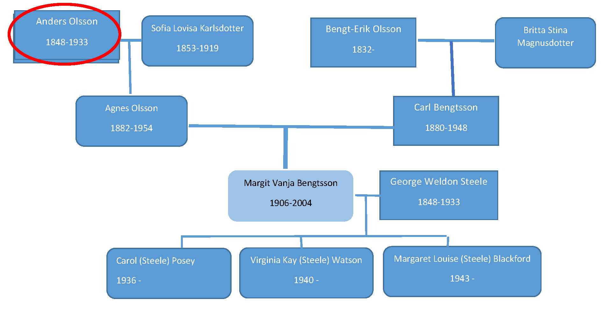
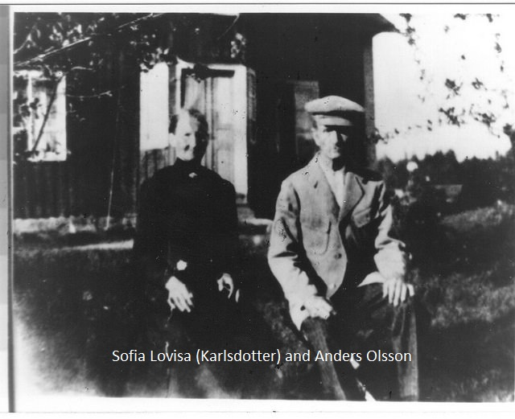

Anders Olsson
Born: 1853 Sweden
Died: 1919 Sweden
Mother: Maria Andersdotter (1816- )
Father: Olof Nilsson (1810- )
WIfe:
Sofia Lovisa Karlsdotter
Children:
Anna Kristina 1875-
Axel Albin 1878-
Agnes Andersdotter 1882-1954
Elin Sofia 1887-
Hilder Maria 1889
Carl Hjamar Stark

Sofia (Karlsdotter) Olsson and Anders Olsson
